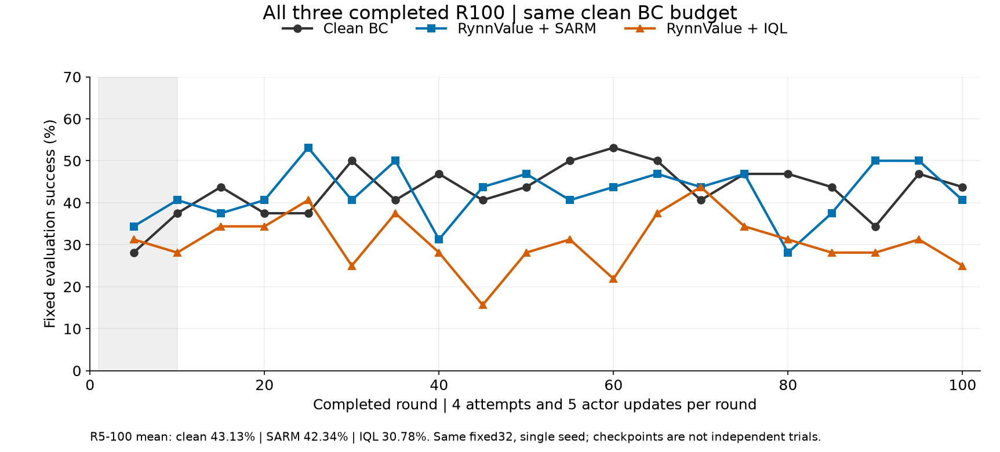
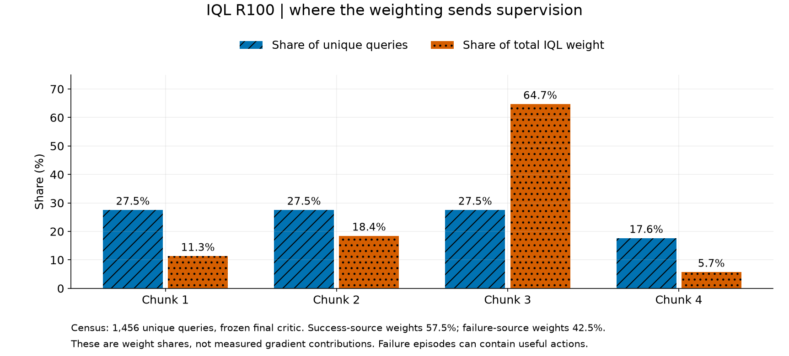
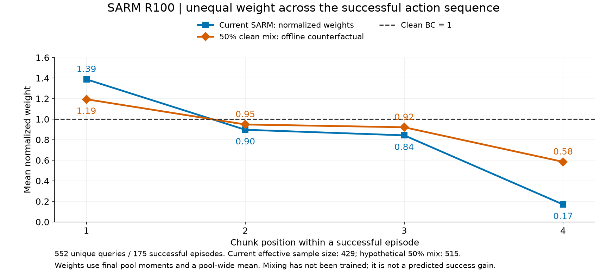
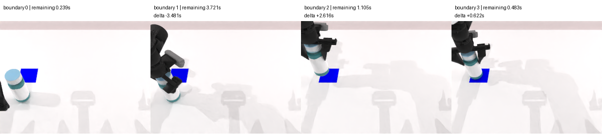
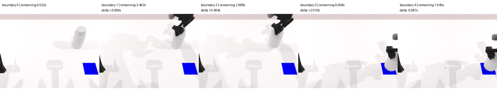

为什么没超过成功BC：SARM / IQL
两组均已完成R100。共同固定评估均值：clean 43.13%，SARM 42.34%，IQL 30.78%。SARM更接近没有明确收益；IQL退步较明显。单seed、固定32场景重复评估。
主分析与实验优先级 · IQL实现审计 · SARM实现审计 · 相关论文与代码 · 完整数值

相同4/U5、R100预算。灰色区域只表示IQL的成功BC预热阶段；R11起同时切换actor数据池与优势权重。

完整1456条unique转移，冻结终点critic复算。第3段得到64.65%总权重，成功来源权重份额57.50%、失败42.50%。这是loss系数份额，不是实际梯度份额；失败轨迹也可能包含好动作。

552条成功query，以终池统计复算。当前更重第一段、更轻第四段。50%clean混合为尚未训练的消融：检查强加权与零权是否伤害成功动作链。
以下两例来自IQL实际回放，展示同一RynnValue评分器的局部反例；并非SARM本身训练池，也不是随机样本或失败根因证明。每张图只展示执行边界，不代表完整运动视频。

R61成功轨迹：初始尚未完成却估剩时0.239秒；首段后3.721秒，delta为−3.481秒；最终成功0.483秒。不能直接把负delta当有害动作。

另一条R61成功轨迹：最后一段0.958→1.045秒，delta为−0.087秒。可能是预测误差、精细动作或阶段定义差异，需完整视频进一步区分。
下一组优先：IQL actor回成功池、Q/V仍全池；SARM只加入50%clean混合。其后分别试β、Sparse-IQL与critic预算，避免同时改多个因素。本轮仅分析与CPU前向，无生产训练改动。